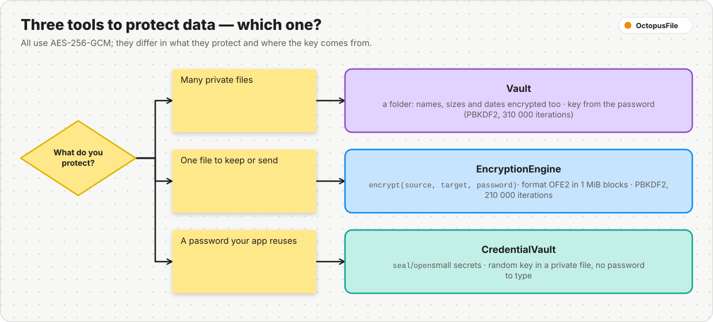
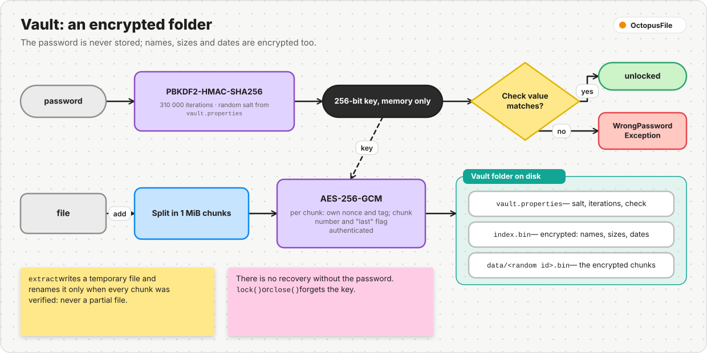
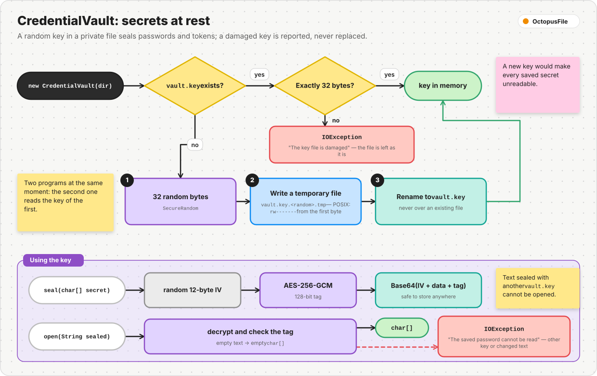
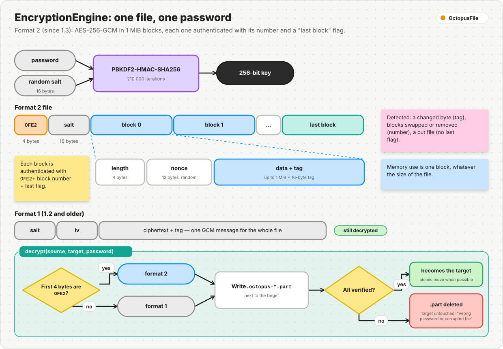

Vault and secrets

Vault — an encrypted folder#

javatry (Vault vault = Vault.create(root, "a long password".toCharArray())) {
vault.add(contract, "Contracts/contract.pdf", null);
}
try (Vault vault = Vault.unlock(root, "a long password".toCharArray())) {
for (Vault.Entry e : vault.list()) {
vault.extract(e, out.resolve(e.name()), null);
}
} catch (Vault.WrongPasswordException ex) {
System.out.println("wrong password");
}
| Cipher | AES-256-GCM, files in 1 MiB chunks, each with its own nonce and tag |
| Integrity | chunk number and a "last chunk" flag are authenticated: reordering, removing, cutting or changing a chunk is detected and the extraction fails without leaving a partial file |
| Key | PBKDF2-HMAC-SHA256, 310 000 iterations, random salt; the password is never stored |
| Names | names, sizes and dates are in an encrypted index; on disk there are only random file names |
| Files | vault.properties (salt, iterations, check), index.bin, data/<id>.bin |
Also: addTree(folder, progress), delete(entry), rename(entry, name), changePassword(newPassword) (re-encrypts everything, block by block in memory: no plain copy is written to the disk), lock() (forgets the key).
Changing the password is safe against a crash. The files are written again as data/<id>.new next to the old ones; the change counts only when vault.properties is replaced. If the program stops before that, the old password still opens everything and the .new files are removed at the next unlock; if it stops after, the next unlock (with the new password) finishes moving the files.
extract writes to a new temporary file next to the target and renames it at the end: a damaged file or a wrong key never leaves a partial file, and an existing file called name.part is never touched. Names are cleaned (.. removed), so extraction never leaves the destination folder.
There is no recovery without the password. Say it clearly in your UI.
CredentialVault — secrets at rest#

Keeps passwords and tokens encrypted with a random key stored in a private file (owner-only permissions on POSIX systems, set when the file is created). A damaged key file is reported with an exception and never replaced: a new key would make every saved secret unreadable. Use it for things your application must send again later (for example a WebDAV app password).
javaCredentialVault secrets = new CredentialVault(dir.resolve("keys"));
String sealed = secrets.seal("app password".toCharArray()); // safe to store
char[] back = secrets.open(sealed);
EncryptionEngine — one file, one password#

OctopusFile.of().encrypt(source, target, password) / decrypt(...): AES-256-GCM with a PBKDF2 key (210 000 iterations). Since 1.3 the format is in 1 MiB blocks ("OFE2", salt, then [length][nonce][data + tag] per block, each block authenticated with its number and a "last block" flag), so memory use stays small for big files and a cut file is detected. Files of the old format ([salt][iv][ciphertext + tag]) are still decrypted. The target appears only when everything was verified: a wrong password leaves no partial file and does not touch an existing target.
Examples compiled and run byThe cryptographic design has been tested (round trips, wrong passwords, tampering, interrupted password changes) and reviewed in 1.3 (see Security), but not independently audited. Have it reviewed before relying on it for high-value data.
DocExamplesTest